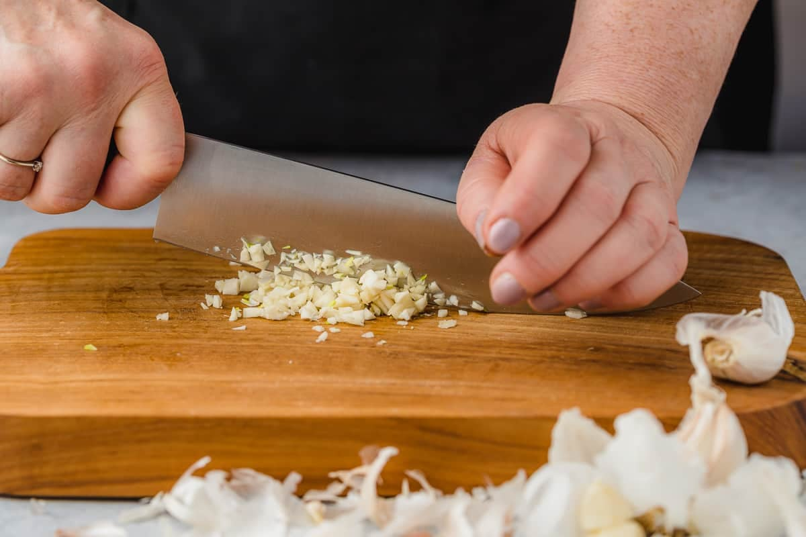

Tips
Tip of the Day
Add salt to your cutting board when mincing garlic- Gordan Ramsay
Since salt is abrasive, by adding salt to your cutting board before mincing garlic,
it allows you to get a finer chop on the garlic. Additionally, salt will keep the garlic
from sticking to your knife. Avoid buying a garlic press and try this tip instead!
Keep frozen vegetables in your freezer!
Frozen vegetables are easy to incorporate in meals and are convenient.
Use double the ingredients
When using ingredients that can be used across different recipes such as chicken, rice or potatoes, make more than the recipe requires. You can then add those ingredients to other recipes to accelerate meal prepping.
Order groceries for pickup or delivery
By ordering your groceries, you save time wandering the supermarket aisles and picking up unnecessary items.
Place your time sensitive ingredients at the front of your fridge
Ensure your leafy greens, fruits or vegetables are at the front of your fridge to avoid disposing them before being used.
Invest in good quality food containers
Investing in food containers will be make the meal prep process more enjoyable and easier.

Buy in bulk
Buying in bulk will save you money, reduce unnecessary packaging waste and allow you to prepare those ingredients in advance.